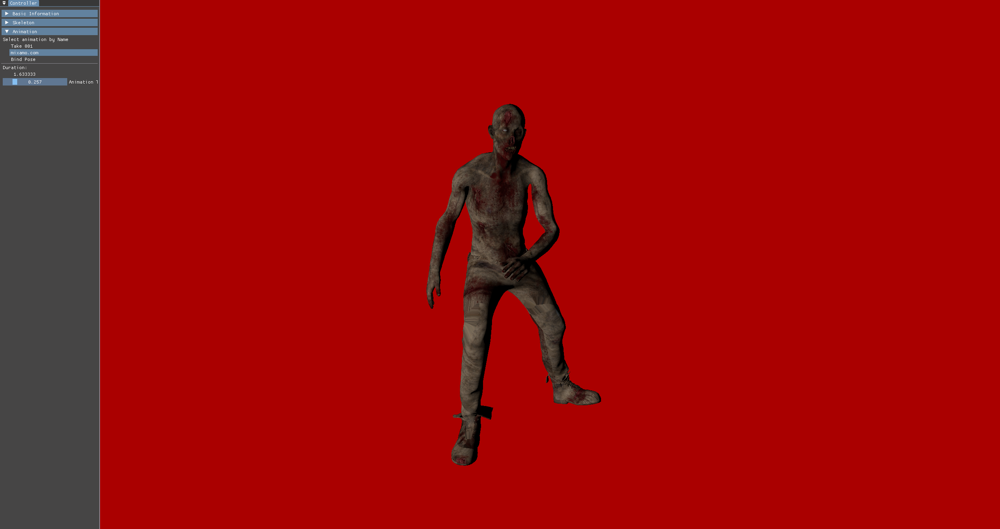
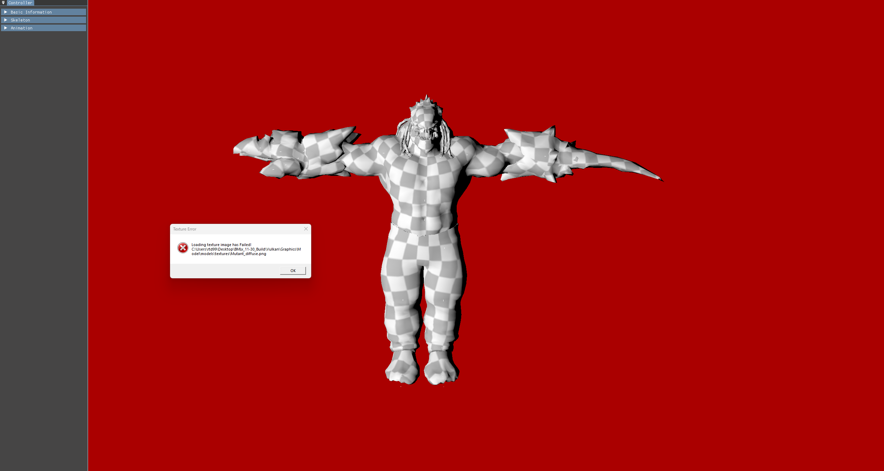
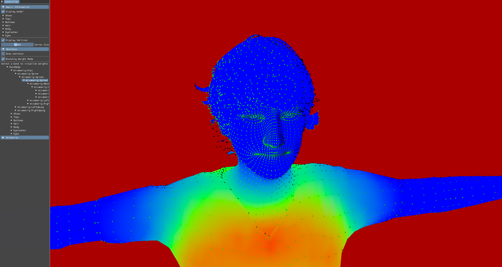

Vulkan Model Viewer with jiggle bone simulation
Used API: Vulkan
Team size: Solo project
Duration: 1 year (WIP)
I was inspired by Vulkan concepts, and inspecting model information. Thus, I decided to implement Vulkan model viewer to inspect model properties
First of all, the primary function is changing models rapidly and easily. Thus, I hope to show a model by drag and drop.
I was excited to show animation. Thus, I made easily observe animation by time.
I hoped to show a model even if the model has an error without crashing. Thus, it showed pop up error when if it has an error. For example, in the image shows no texture errors.
Since an artist who is a playtester give me a feedback that he would be happy if he can see bone blending weights, I implemented it